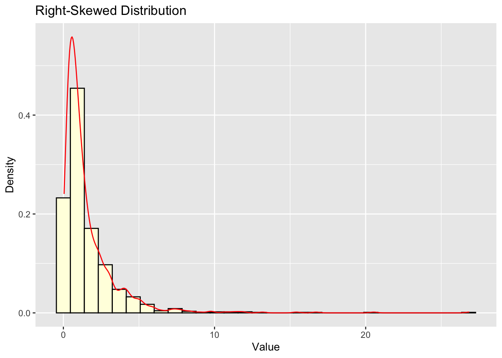
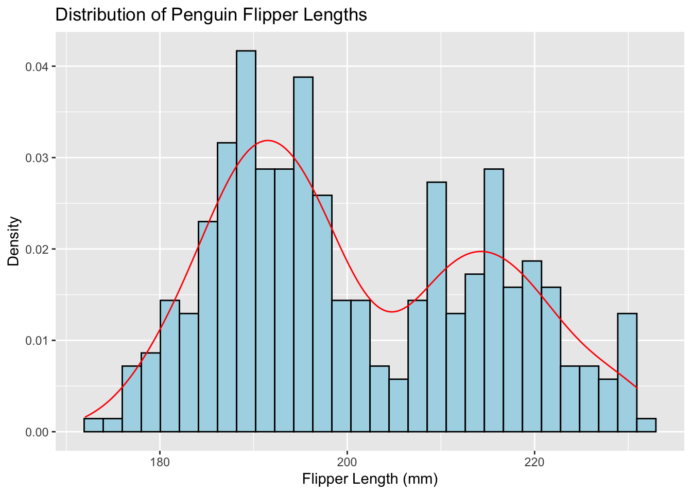

11Fundamentals of Univariate Descriptive Statistics
11.1 Introduction
Descriptive statistics are fundamental tools in social science research, providing a concise summary of data characteristics. They serve several crucial functions:
Summarizing large datasets into manageable information
Identifying patterns and trends in data
Detecting potential anomalies or outliers
Providing a foundation for further statistical analysis
11.2 Types of Data Distributions
Important
Data distribution informs what values a variable takes and how often.
Understanding data distributions is crucial for data analysis and visualization. In this document, we’ll explore various types of distributions and how to visualize them using ggplot2 in R.
11.2.1 Normal Distribution
The normal distribution, also known as the Gaussian distribution, is symmetric and bell-shaped.
# Generate normal distribution datanormal_data <-data.frame(x =rnorm(1000))# Plotggplot(normal_data, aes(x)) +geom_histogram(aes(y = ..density..), bins =30, fill ="skyblue", color ="black") +geom_density(color ="red") +labs(title ="Normal Distribution", x ="Value", y ="Density")
Warning: The dot-dot notation (`..density..`) was deprecated in ggplot2 3.4.0.
ℹ Please use `after_stat(density)` instead.
11.2.2 Uniform Distribution
In a uniform distribution, all values have an equal probability of occurrence.
# Generate uniform distribution datauniform_data <-data.frame(x =runif(1000))# Plotggplot(uniform_data, aes(x)) +geom_histogram(aes(y = ..density..), bins =30, fill ="lightgreen", color ="black") +geom_density(color ="red") +labs(title ="Uniform Distribution", x ="Value", y ="Density")
11.2.3 Skewed Distributions
Skewed distributions are asymmetric, with one tail longer than the other.
# Generate right-skewed dataright_skewed <-data.frame(x =rlnorm(1000))# Plotggplot(right_skewed, aes(x)) +geom_histogram(aes(y = ..density..), bins =30, fill ="lightyellow", color ="black") +geom_density(color ="red") +labs(title ="Right-Skewed Distribution", x ="Value", y ="Density")

11.2.4 Bimodal Distribution
A bimodal distribution has two peaks, indicating two distinct subgroups in the data.
# Generate bimodal databimodal_data <-data.frame(x =c(rnorm(500, mean =-2), rnorm(500, mean =2)))# Plotggplot(bimodal_data, aes(x)) +geom_histogram(aes(y = ..density..), bins =30, fill ="lightpink", color ="black") +geom_density(color ="red") +labs(title ="Bimodal Distribution", x ="Value", y ="Density")
11.3 Visualizing Real-World Data Distributions
Let’s use the palmerpenguins dataset to explore real-world data distributions.
11.3.1 Histogram and Density Plot
ggplot(penguins, aes(x = flipper_length_mm)) +geom_histogram(aes(y = ..density..), bins =30, fill ="lightblue", color ="black") +geom_density(color ="red") +labs(title ="Distribution of Penguin Flipper Lengths", x ="Flipper Length (mm)", y ="Density")
Warning: Removed 2 rows containing non-finite outside the scale range
(`stat_bin()`).
Warning: Removed 2 rows containing non-finite outside the scale range
(`stat_density()`).

11.3.2 Box Plot
Box plots are useful for comparing distributions across categories.
ggplot(penguins, aes(x = species, y = body_mass_g, fill = species)) +geom_boxplot() +labs(title ="Distribution of Penguin Body Mass by Species", x ="Species", y ="Body Mass (g)")
Warning: Removed 2 rows containing non-finite outside the scale range
(`stat_boxplot()`).
Violin plots combine box plot and density plot features.
ggplot(penguins, aes(x = species, y = body_mass_g, fill = species)) +geom_violin(trim =FALSE) +geom_boxplot(width =0.1, fill ="white") +labs(title ="Distribution of Penguin Body Mass by Species", x ="Species", y ="Body Mass (g)")
Warning: Removed 2 rows containing non-finite outside the scale range
(`stat_ydensity()`).
Warning: Removed 2 rows containing non-finite outside the scale range
(`stat_boxplot()`).
11.3.4 Ridgeline Plot
Ridgeline plots are useful for comparing multiple distributions.
library(ggridges)ggplot(penguins, aes(x = flipper_length_mm, y = species, fill = species)) +geom_density_ridges(alpha =0.6) +labs(title ="Distribution of Flipper Length by Penguin Species",x ="Flipper Length (mm)",y ="Species")
Picking joint bandwidth of 2.38
Warning: Removed 2 rows containing non-finite outside the scale range
(`stat_density_ridges()`).
11.4 Conclusion
Understanding and visualizing data distributions is crucial in data analysis. ggplot2 provides a flexible and powerful toolkit for creating various types of distribution plots. By exploring different visualization techniques, we can gain insights into the underlying patterns and characteristics of our data.
11.5 Understanding Outliers
Before diving into specific measures, it’s crucial to understand the concept of outliers, as they can significantly impact many descriptive statistics.
Outliers are data points that differ significantly from other observations in the dataset. They can occur due to:
Measurement or recording errors
Genuine extreme values in the population
Sampling from a different population
Outliers can have a substantial effect on many statistical measures, especially those based on means or sums of squared deviations. Therefore, it’s essential to:
Identify outliers through both statistical methods and domain knowledge
Investigate the cause of outliers
Make informed decisions about whether to include or exclude them in analyses
Throughout this guide, we’ll discuss how different descriptive measures are affected by outliers.
11.6 Measures of Central Tendency
Measures of central tendency aim to identify the “typical” or “central” value in a dataset. The three primary measures are mean, median, and mode.
11.6.1 Arithmetic Mean
The arithmetic mean is the sum of all values divided by the number of values.
Formula:\(\bar{x} = \frac{1}{n}\sum_{i=1}^n x_i\)
Important Property: The mean is a balancing point in the data. The sum of deviations from the mean is always zero:
\(\sum_{i=1}^n (x_i - \bar{x}) = 0\)
This property makes the mean useful in many statistical calculations.
The Mean as a Balance Point
This visualization shows how the arithmetic mean (5) acts as a balance point with clustered left points and spread right points:
Left side of mean:
Points at 2 and 3
Close together (1 unit apart)
Distances from mean: 3 and 2 units
Total “pull” = 5 units
Right side of mean:
Points at 6 and 9
Spread apart (3 units apart)
Distances from mean: 1 and 4 units
Total “pull” = 5 units
Manual Calculation Example:
Let’s calculate the mean for the dataset: 2, 4, 4, 5, 5, 7, 9
As we can see, the outlier (100) drastically affects the mean.
11.6.2 Median
The median is the middle value when the data is ordered.
Manual Calculation Example:
Using the same dataset: 2, 4, 4, 5, 5, 7, 9
Step
Description
Result
1
Order the data
2, 4, 4, 5, 5, 7, 9
2
Find the middle value
5
For even number of values, take the average of the two middle values.
R calculation:
median(data)
[1] 5
median(data_with_outlier)
[1] 5
Pros:
Not affected by extreme outliers
Better for skewed distributions
Cons:
Doesn’t use all data points
Less useful for further statistical calculations
Warning
To find the position of the median in a dataset:
First sort the data in ascending order
If n is odd:
Median position = \(\frac{n + 1}{2}\)
If n is even:
First median position = \(\frac{n}{2}\)
Second median position = \(\frac{n}{2} + 1\)
Median = \(\frac{\text{value at }\frac{n}{2} + \text{value at }(\frac{n}{2}+1)}{2}\)
For example:
Odd n=7: position = \(\frac{7+1}{2} = 4\)th value
Even n=8: positions = \(\frac{8}{2} = 4\)th and \(4+1 = 5\)th value
11.6.3 Mode
The mode is the most frequently occurring value.
Manual Calculation Example:
Using the dataset: 2, 4, 4, 5, 5, 7, 9
Value
Frequency
2
1
4
2
5
2
7
1
9
1
The mode is 4 and 5 (bimodal).
R calculation:
library(modeest)mfv(data) # Most frequent value
[1] 4 5
Pros:
Only measure of central tendency for nominal data
Can identify multiple peaks in the data
Cons:
Not always uniquely defined
Not useful for continuous data
11.6.4 Weighted Mean
The weighted mean is used when some data points are more important than others. There are two types of weighted means: with not normalized weights and with normalized weights.
11.6.4.1 Weighted Mean with Not Normalized Weights
This is the standard form of the weighted mean, where weights can be any positive numbers representing the importance of each data point.
Divide the result from step 1 by the result from step 2
32 / 7 = 4.57
R calculation:
x <-c(2, 4, 5, 7)w <-c(1, 2, 3, 1)weighted.mean(x, w)
[1] 4.571429
11.6.4.2 Weighted Mean with Normalized Weights (Fractions)
In this case, the weights are fractions that sum to 1, representing the proportion of importance for each data point.
Formula:\(\bar{x}_w = \sum_{i=1}^n w_i x_i\), where \(\sum_{i=1}^n w_i = 1\)
Manual Calculation Example:
Let’s calculate the weighted mean for the dataset: 2, 4, 5, 7 with normalized weights 0.1, 0.3, 0.4, 0.2
Step
Description
Calculation
1
Multiply each value by its weight
(2 * 0.1) + (4 * 0.3) + (5 * 0.4) + (7 * 0.2)
2
Sum the results
0.2 + 1.2 + 2.0 + 1.4 = 4.8
R calculation:
x <-c(2, 4, 5, 7)w_normalized <-c(0.1, 0.3, 0.4, 0.2) # Note: these sum to 1sum(x * w_normalized)
[1] 4.8
Pros of Weighted Means:
Account for varying importance of data points
Useful in survey analysis with different sample sizes or importance levels
Can adjust for unequal probabilities in sampling designs
Cons of Weighted Means:
Require justification for weights
Can be misused to manipulate results
May be less intuitive to interpret than simple arithmetic mean
11.7 Measures of Variability
These measures describe how spread out the data is. They are crucial for understanding the dispersion of data points around the central tendency.
Understanding Different Levels of Variability
This visualization shows three normal distributions with the same mean (μ = 10) but different levels of variability:
Low Variability (σ = 0.5)
Data points cluster tightly around the mean
The density curve is tall and narrow
Most observations fall within ±0.5 units of the mean
Medium Variability (σ = 2.0)
Data points spread out more from the mean
The density curve is lower and wider
Most observations fall within ±2 units of the mean
High Variability (σ = 4.0)
Data points spread widely from the mean
The density curve is much flatter and wider
Most observations fall within ±4 units of the mean
Note how the standard deviation (σ) directly relates to the spread of the distribution - larger values of σ indicate greater variability in the data, while smaller values indicate that data points tend to be closer to the mean.
11.7.1 Range
The range is the difference between the maximum and minimum values.
Formula:\(R = x_{max} - x_{min}\)
Manual Calculation Example:
Using the dataset: 2, 4, 4, 5, 5, 7, 9
Step
Description
Calculation
1
Find the maximum value
9
2
Find the minimum value
2
3
Subtract minimum from maximum
9 - 2 = 7
R calculation:
range(data)
[1] 2 9
max(data) -min(data)
[1] 7
Pros:
Simple to calculate and understand
Gives an immediate sense of data spread
Cons:
Extremely sensitive to outliers
Doesn’t provide information about the distribution between extremes
11.7.2 Interquartile Range (IQR)
The IQR is the difference between the 75th and 25th percentiles.
Formula:\(IQR = Q_3 - Q_1\)
To find quartiles manually:
For odd number of values:
Q2 (median) is the middle value
Q1 is the median of the lower half
Q3 is the median of the upper half
For even number of values:
Q2 is the average of the two middle values
Q1 is the median of the lower half (including the lower middle value)
Q3 is the median of the upper half (including the upper middle value)
Manual Calculation Example:
Using the dataset: 2, 4, 4, 5, 5, 7, 9
Step
Description
Calculation
1
Order the data
2, 4, 4, 5, 5, 7, 9
2
Find Q2 (median)
5
3
Find Q1 (median of lower half)
4
4
Find Q3 (median of upper half)
7
5
Calculate IQR
Q3 - Q1 = 7 - 4 = 3
R calculation:
IQR(data)
[1] 2
Pros:
Robust to outliers
Provides information about the spread of the middle 50% of the data
Cons:
Ignores the tails of the distribution
Less efficient than standard deviation for normal distributions
11.7.3 Variance
Variance measures the average squared deviation from the mean.
The coefficient of variation is the standard deviation divided by the mean, often expressed as a percentage.
Formula:\(CV = \frac{s}{\bar{x}} \times 100\%\)
Manual Calculation Example:
Using the dataset: 2, 4, 4, 5, 5, 7, 9
Step
Description
Calculation
1
Calculate the mean
\(\bar{x} = 5.14\)
2
Calculate the standard deviation
\(s = 2.27\)
3
Divide s by the mean and multiply by 100
\((2.27 / 5.14) * 100 = 44.16\%\)
R calculation:
(sd(data) /mean(data)) *100
[1] 44.09586
Pros:
Allows comparison of variability between datasets with different units or means
Useful in fields like finance for risk assessment
Cons:
Not meaningful for data with both positive and negative values
Can be misleading when mean is close to zero
11.8 Measures of Relative Position
These measures help us understand where a particular value falls in relation to the entire dataset.
11.8.1 Percentiles
Percentiles are vital statistical measures that divide a dataset into 100 equal parts, helping us understand how values are distributed and where specific observations fall within the overall distribution.
11.8.1.1 Definition and Interpretation
A percentile represents the value below which a certain percentage of observations fall. For example:
The 25th percentile (Q1) means 25% of the data falls below this value
The 50th percentile (median) divides the data in half
The 75th percentile (Q3) means 75% of the data falls below this value
11.8.1.2 Mathematical Formula
For the kth percentile: \(P_k = L + \frac{k(n+1)}{100}\)
Where:
\(P_k\) is the position of the kth percentile
\(L\) is the lower limit of the interval
\(k\) is the desired percentile (1-100)
\(n\) is the number of observations
11.8.1.3 Practical Examples
Example 1: Test Scores Consider these exam scores: 65, 70, 72, 75, 78, 80, 82, 85, 88, 90
# Generate example legislative voting agreement scoresset.seed(456)voting_agreement <-c(# Regular voting patternsrnorm(400, mean =75, sd =10),# Cross-party cooperation instancesrnorm(80, mean =50, sd =15),# Party-line votesrnorm(20, mean =95, sd =5)) |>pmax(0) |>pmin(100)kurt_value <-kurtosis(voting_agreement)kurt_value
[1] 3.849939
# Visualization with normal distribution comparisonx_range <-seq(min(voting_agreement)-1, max(voting_agreement)+1, length.out =100)normal_dist <-dnorm(x_range, mean =mean(voting_agreement), sd =sd(voting_agreement))ggplot() +geom_density(data =data.frame(x = voting_agreement), aes(x = x), fill ="skyblue", alpha =0.5 ) +geom_line(data =data.frame(x = x_range, y = normal_dist),aes(x = x, y = y),color ="red",linetype ="dashed" ) +labs(title =str_glue("Legislative Voting Agreement Distribution (Kurtosis = {round(kurt_value, 4)})"),subtitle ="Observed distribution (blue) vs. Normal distribution (red)",x ="Voting Agreement Score (%)",y ="Density" ) +theme_minimal()
11.9.3.3 Interpretation Guide
Excess Kurtosis: Difference from normal distribution’s kurtosis (3)
Leptokurtic (> 3): More extreme values than normal distribution
Platykurtic (< 3): Fewer extreme values than normal distribution
Mesokurtic (= 3): Similar to normal distribution
11.10 Bivariate Statistics
Bivariate statistics describe the relationship between two variables. We’ll explore several measures, starting with covariance and progressing to more advanced correlation measures.
11.10.1 Covariance
Covariance measures how two variables vary together.
employment
education Employed Unemployed
College 2 1
Graduate 3 0
High School 1 2
Interpretation:
This table shows the count of individuals in each combination of education level and employment status.
For example, we can see how many high school graduates are employed versus unemployed.
Pros:
Provides a clear visual representation of the relationship between categorical variables
Easy to understand and interpret
Basis for many statistical tests (e.g., chi-square test of independence)
Cons:
Limited to categorical data
Can become unwieldy with many categories
Doesn’t provide a single summary statistic of association strength
11.11 Choosing the Appropriate Measure
When deciding which bivariate statistic to use, consider:
Data type:
Continuous data: Covariance, Pearson correlation
Ordinal data: Spearman correlation
Categorical data: Cross-tabulation
Relationship type:
Linear: Pearson correlation
Monotonic but potentially non-linear: Spearman correlation
Presence of outliers:
If outliers are a concern, Spearman correlation is more robust
Distribution:
For normally distributed data, Pearson correlation is most powerful
For non-normal distributions, consider Spearman correlation
Sample size:
For very small samples, non-parametric methods like Spearman correlation might be preferred
Remember, it’s often valuable to use multiple measures and visualizations (like scatter plots) to get a comprehensive understanding of the relationship between variables.
11.12 Introduction to Elementary Multivariate Statistics
Multivariate statistics involve the analysis of relationships among three or more variables simultaneously. This section will introduce some basic concepts and techniques in multivariate analysis, with a focus on correlation-based methods.
11.12.1 Correlation Matrix
A correlation matrix is a table showing the pairwise correlations of several variables. It’s a fundamental tool in multivariate analysis.
Example: Let’s create a correlation matrix for four variables: height, weight, age, and income.
Loadings:
MR2 MR1
height 0.798
weight 0.836
age 0.729
income 0.895
MR2 MR1
SS loadings 1.344 1.341
Proportion Var 0.336 0.335
Cumulative Var 0.336 0.671
Interpretation:
Look at which variables load highly on each factor.
Try to interpret what each factor might represent based on the variables that load on it.
11.12.6 Considerations in Multivariate Analysis
Sample Size: Multivariate techniques often require larger sample sizes for stable results.
Multicollinearity: High correlations among independent variables can cause issues in some analyses.
Outliers: Multivariate outliers can have a strong influence on results.
Assumptions: Many techniques assume multivariate normality and linear relationships.
Interpretation Complexity: As the number of variables increases, interpretation can become more challenging.
11.12.7 Conclusion
This introduction to multivariate statistics builds upon the concept of correlation to explore relationships among multiple variables. These techniques provide powerful tools for understanding complex datasets, but they also require careful consideration of assumptions and limitations. As you progress in your statistical journey, you’ll encounter more advanced multivariate techniques such as MANOVA, discriminant analysis, and structural equation modeling.
11.13 Exercise 1. Center and dispersion of data
11.13.1 Data
We have salary data (in thousands of euros) from two small European companies:
Index
Company X
Company Y
1
2
3
2
2
3
3
2
4
4
3
4
5
3
4
6
3
4
7
3
4
8
3
4
9
3
5
10
4
5
11
4
5
12
4
5
13
4
5
14
4
5
15
5
6
16
5
6
17
5
6
18
5
7
19
20
7
20
35
8
This table presents the data for both Company X and Company Y side by side, with an index column for easy reference.
11.13.2 Measures of Central Tendency
11.13.2.1 Mean
The mean is the average of all values in a dataset.
Q1 (25th percentile): median of first 10 numbers = 4
Q2 (50th percentile, median): 5
Q3 (75th percentile): median of last 10 numbers = 6
11.13.4.3 R Verification
quantile(X)
0% 25% 50% 75% 100%
2 3 4 5 35
quantile(Y)
0% 25% 50% 75% 100%
3 4 5 6 8
11.13.5 Tukey Box Plot
A Tukey box plot visually represents the distribution of data based on quartiles. We’ll use ggplot2 to create the plot.
library(ggplot2)library(tidyr)# Prepare the datadata <-data.frame(Company =rep(c("X", "Y"), each =20),Salary =c(X, Y))# Create the box plotggplot(data, aes(x = Company, y = Salary, fill = Company)) +geom_boxplot() +labs(title ="Salary Distribution in Companies X and Y",x ="Company",y ="Salary (thousands of euros)") +theme_minimal() +scale_fill_manual(values =c("X"="#69b3a2", "Y"="#404080"))
11.13.5.1 Interpreting the Box Plot
The box represents the interquartile range (IQR) from Q1 to Q3.
The line inside the box is the median (Q2).
Whiskers extend to the smallest and largest values within 1.5 * IQR.
Points beyond the whiskers are considered outliers.
11.13.6 Comparison of Results
Measure
Company X
Company Y
Mean
5.95
5.00
Median
4
5
Mode
3
4 and 5
Variance
61.21
1.79
Standard Deviation
7.82
1.34
Q1
3
4
Q3
5
6
11.13.6.1 Key Observations:
Central Tendency: Company X has a higher mean but lower median than Company Y, indicating a right-skewed distribution for Company X.
Dispersion: Company X shows much higher variance and standard deviation, suggesting greater salary disparities.
Distribution Shape: Company Y’s salaries are more tightly clustered, while Company X has extreme values (potential outliers) that significantly affect its mean and variance.
Quartiles: Company Y’s interquartile range (Q3 - Q1) is slightly larger, but its overall range is much smaller than Company X’s.
11.13.7 Conclusion
This comparative analysis reveals significant differences in salary structures between the two companies. Company X shows greater variability and potential inequality in its pay scale, while Company Y demonstrates a more consistent and narrowly distributed salary range.
11.14 Exercise 2. Comparing District Magnitude Variability Between Countries
11.14.1 Data
We have data on the size of electoral districts from two countries:
Country with high variability (X): 1, 3, 5, 7, 9, 11, 13, 15, 17, 19
Country with low variability (Y): 8, 9, 9, 10, 10, 11, 11, 12, 12, 13
11.14.2 Measures of Central Tendency
11.14.2.1 Arithmetic Mean
The arithmetic mean is the sum of all values divided by their count.
To visually compare the distribution of district sizes between the two countries, we can use a Tukey-style boxplot. This type of plot provides a concise summary of the data’s distribution, including the median, quartiles, and potential outliers.
# Load necessary librarylibrary(ggplot2)# Create data frames for each countrycountry_x <-data.frame(country ="X", size =c(1, 3, 5, 7, 9, 11, 13, 15, 17, 19))country_y <-data.frame(country ="Y", size =c(8, 9, 9, 10, 10, 11, 11, 12, 12, 13))# Combine the dataall_data <-rbind(country_x, country_y)# Create the boxplotggplot(all_data, aes(x = country, y = size, fill = country)) +geom_boxplot() +geom_jitter(width =0.2, alpha =0.5) +labs(title ="Comparison of District Magnitude Variability",x ="Country",y ="District Size") +theme_minimal() +scale_fill_manual(values =c("X"="#FFA07A", "Y"="#98FB98"))
Comparison of District Magnitude Variability
11.14.7.1 Interpreting the Boxplot
The boxplot provides several key pieces of information:
The box represents the interquartile range (IQR), with the lower edge at Q1 and the upper edge at Q3.
The line inside the box represents the median (Q2).
The whiskers extend to the smallest and largest values within 1.5 times the IQR from the edges of the box.
Any points beyond the whiskers are considered potential outliers and are plotted individually.
From this plot, we can observe:
The median district size for Country Y is slightly higher than for Country X, consistent with our earlier calculations.
The box for Country X is much larger than for Country Y, indicating a greater spread of the middle 50% of the data and thus higher variability.
Country X’s data spans a much wider range, as shown by the longer whiskers, further confirming its higher variability.
Country Y’s data is more tightly clustered, with a smaller box and shorter whiskers, indicating lower variability.
The individual points for Country X are more spread out, while those for Country Y are more clustered, providing a visual representation of the difference in variability.
This boxplot visualization reinforces our earlier numerical analysis, clearly showing the contrast in district size variability between the two countries.
11.14.8 Key Observations
Central Tendency: Both countries have similar means and medians, indicating that their average district sizes are close.
Dispersion:
Country X shows much higher variance and standard deviation, confirming its high variability.
The range for Country X (18) is more than three times larger than for Country Y (5).
The IQR for Country X (12) is four times larger than for Country Y (3), indicating a much wider spread of the middle 50% of the data.
Distribution Shape:
Country X has a uniform distribution with no clear mode.
Country Y has a more clustered distribution with multiple modes, indicating common district sizes.
Coefficient of Variation:
The CV of Country X (60.6%) is significantly higher than Country Y (15.0%), providing a standardized measure of the difference in variability.
Visual Comparison:
The boxplot clearly illustrates the stark difference in variability between the two countries, supporting our numerical findings.
11.14.9 Conclusions
This analysis clearly shows the contrast in electoral district size variability between the two countries:
Country X exhibits high variability, with district sizes spread widely from 1 to 19. This may indicate a diverse electoral system with a mix of small (possibly single-member) and large multi-member districts.
Country Y exhibits low variability, with district sizes tightly clustered between 8 and 13. This suggests a more uniform electoral system, likely consisting of medium-sized multi-member districts.
These differences in variability can have significant implications for political representation, party strategies, and electoral outcomes in each country.
The addition of the boxplot provides a powerful visual tool for understanding these differences, making the contrast between the two countries immediately apparent and complementing the detailed numerical analysis.
11.15 Appendix: Summary Tables for Data Types and Applicable Statistical Measures
11.15.1 Table 1: Discrete vs. Continuous Data
Characteristic
Discrete Data
Continuous Data
Definition
Can only take specific values
Can take any value within a range
Examples
Number of children, Shoe size
Height, Weight, Time
Pros
- Easy to categorize - Straightforward to count - Often simpler to analyze
- More precise measurements - Allows for more sophisticated statistical analyses - Can be grouped into intervals
Cons
- Limited precision - May not capture subtle differences - Some statistical methods may not be applicable
- Can be more complex to analyze - May require larger sample sizes for meaningful analysis - Rounding errors can occur in measurement
Visualization
Bar charts, Pie charts
Histograms, Scatter plots, Line graphs
11.15.2 Table 2: Stevens’ Typology of Measurement Scales
Characteristic
Nominal
Ordinal
Interval
Ratio
Definition
Categories with no order
Ordered categories
Equal intervals, no true zero
Equal intervals with true zero
Examples
Gender, Blood type
Education level, Likert scales
Temperature (°C, °F), Calendar dates
Height, Weight, Age
Pros
- Easy to collect - Simple to categorize
- Captures order - Useful for rankings
- Allows for meaningful differences - More sophisticated analyses possible
- Most versatile - Allows all arithmetic operations
Cons
- Limited analytical options - No arithmetic operations
- Differences between categories not quantifiable - Limited arithmetic operations
- No true zero point - Ratios not meaningful
- Can be difficult to obtain true ratio measurements in some fields
11.15.3 Table 3: Pros and Cons of Various Statistical Measures
11.15.3.1 Measures of Center
Measure
Pros
Cons
Applicable to
Mean
- Uses all data points - Allows for further statistical calculations - Ideal for normally distributed data
- Sensitive to outliers - Not ideal for skewed distributions - Not meaningful for nominal data
Interval, Ratio, some Discrete, Continuous
Median
- Not affected by outliers - Good for skewed distributions - Can be used with ordinal data
- Ignores the actual values of most data points - Less useful for further statistical analyses
Ordinal, Interval, Ratio, Discrete, Continuous
Mode
- Can be used with any data type - Good for finding most common category
- May not be unique (multimodal) - Not useful for many types of analyses - Ignores magnitude of differences between values
All types
11.15.3.2 Measures of Variability
Measure
Pros
Cons
Applicable to
Range
- Simple to calculate and understand - Gives quick idea of data spread
- Very sensitive to outliers - Ignores all data between extremes - Not useful for further statistical analyses
Ordinal, Interval, Ratio, Discrete, Continuous
Interquartile Range (IQR)
- Not affected by outliers - Good for skewed distributions
- Ignores 50% of the data - Less intuitive than range
Ordinal, Interval, Ratio, Discrete, Continuous
Variance
- Uses all data points - Basis for many statistical procedures
- Sensitive to outliers - Units are squared (less intuitive)
Interval, Ratio, some Discrete, Continuous
Standard Deviation
- Uses all data points - Same units as original data - Widely used and understood
- Sensitive to outliers - Assumes roughly normal distribution for interpretation
Interval, Ratio, some Discrete, Continuous
Coefficient of Variation
- Allows comparison between datasets with different units or means
- Can be misleading when means are close to zero - Not meaningful for data with negative values
Ratio, some Interval
11.15.3.3 Measures of Correlation/Association
Measure
Pros
Cons
Applicable to
Pearson’s r
- Measures linear relationship - Widely used and understood
- Assumes normal distribution - Sensitive to outliers - Only captures linear relationships
Interval, Ratio, Continuous
Spearman’s rho
- Can be used with ordinal data - Captures monotonic relationships - Less sensitive to outliers
- Loses information by converting to ranks - May miss some types of relationships
Ordinal, Interval, Ratio
Kendall’s tau
- Can be used with ordinal data - More robust than Spearman’s for small samples - Has nice interpretation (probability of concordance)
- Loses information by only considering order - Computationally more intensive
Ordinal, Interval, Ratio
Chi-square
- Can be used with nominal data - Tests independence of categorical variables
- Requires large sample sizes - Sensitive to sample size - Doesn’t measure strength of association
Nominal, Ordinal
Cramér’s V
- Can be used with nominal data - Provides measure of strength of association - Normalized to [0,1] range
- Interpretation can be subjective - May overestimate association in small samples
Nominal, Ordinal
Statistical Measures Applicability / Zastosowanie miar statystycznych
Measure (EN)
Miara (PL)
Nominal
Ordinal
Interval
Ratio
Central Tendency / Tendencja centralna:
Mode
Dominanta
✓
✓
✓
✓
Median
Mediana
-
✓
✓
✓
Arithmetic Mean
Średnia arytmetyczna
-
-
✓*
✓
Geometric Mean
Średnia geometryczna
-
-
-
✓
Harmonic Mean
Średnia harmoniczna
-
-
-
✓
Dispersion / Rozproszenie:
Range
Rozstęp
-
✓
✓
✓
Interquartile Range
Rozstęp międzykwartylowy
-
✓
✓
✓
Mean Absolute Deviation
Średnie odchylenie bezwzględne
-
-
✓
✓
Variance
Wariancja
-
-
✓*
✓
Standard Deviation
Odchylenie standardowe
-
-
✓*
✓
Coefficient of Variation
Współczynnik zmienności
-
-
-
✓
Association / Współzależność:
Chi-square
Chi-kwadrat
✓
✓
✓
✓
Spearman Correlation
Korelacja Spearmana
-
✓
✓
✓
Kendall’s Tau
Tau Kendalla
-
✓
✓
✓
Pearson Correlation
Korelacja Pearsona
-
-
✓*
✓
Covariance
Kowariancja
-
-
✓*
✓
* Theoretically problematic but commonly used in practice / Teoretycznie problematyczne, ale powszechnie stosowane w praktyce
11.15.4 Notes / Uwagi:
Measurement Scales / Skale pomiarowe:
Nominal: Categories without order / Kategorie bez uporządkowania
Ordinal: Ordered categories / Kategorie uporządkowane
Interval: Equal intervals, arbitrary zero / Równe interwały, umowne zero
Ratio: Equal intervals, absolute zero / Równe interwały, absolutne zero
Practical Considerations / Aspekty praktyczne:
Some measures marked with ✓* are commonly used for interval data despite theoretical issues / Niektóre miary oznaczone ✓* są powszechnie stosowane dla danych przedziałowych pomimo problemów teoretycznych
Choice of measure should consider both theoretical appropriateness and practical utility / Wybór miary powinien uwzględniać zarówno poprawność teoretyczną jak i użyteczność praktyczną
More restrictive scales (ratio) allow all measures from less restrictive scales / Bardziej restrykcyjne skale (ilorazowe) pozwalają na wszystkie miary z mniej restrykcyjnych skal